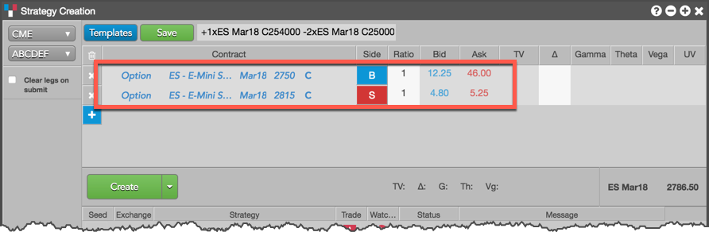
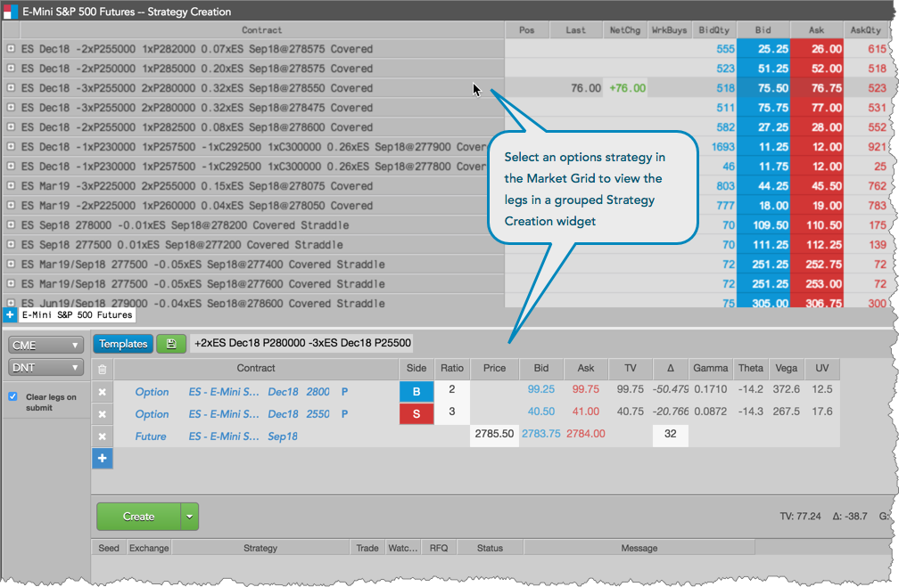
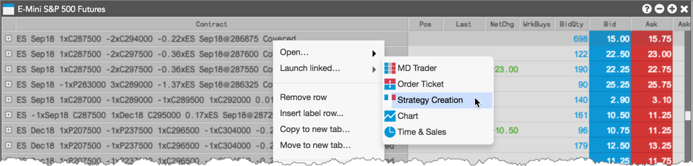
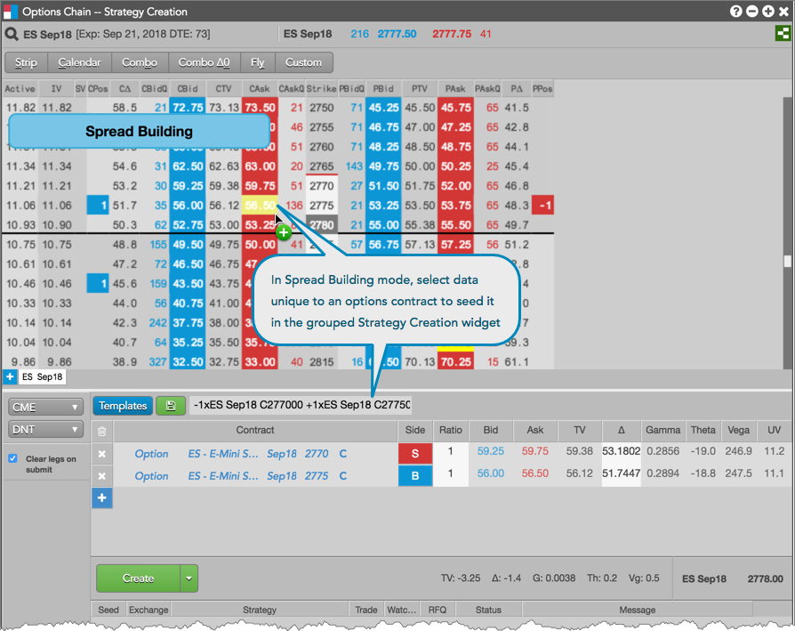
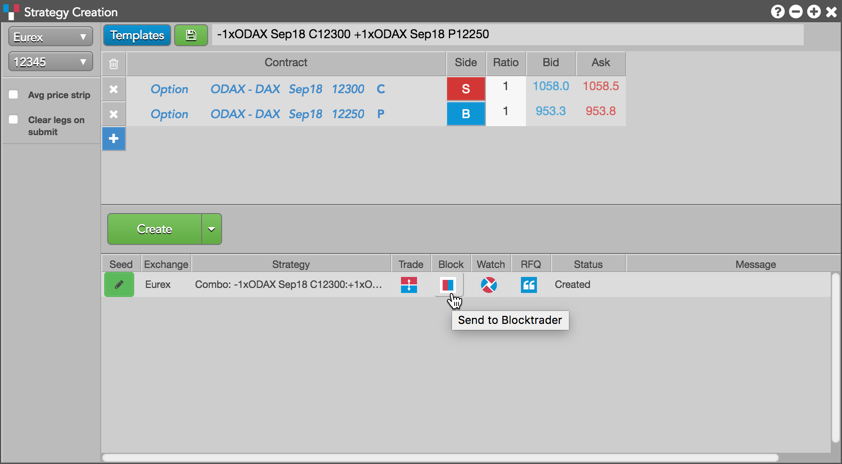
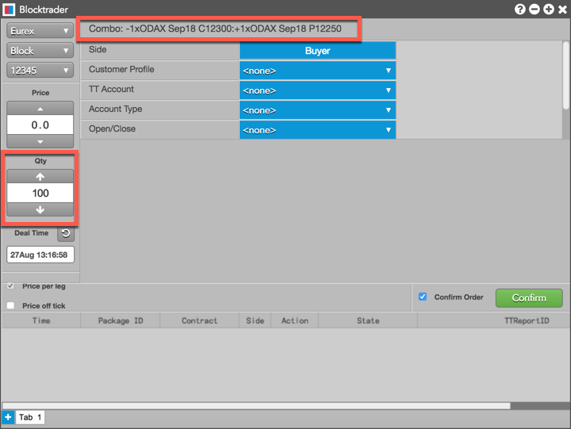
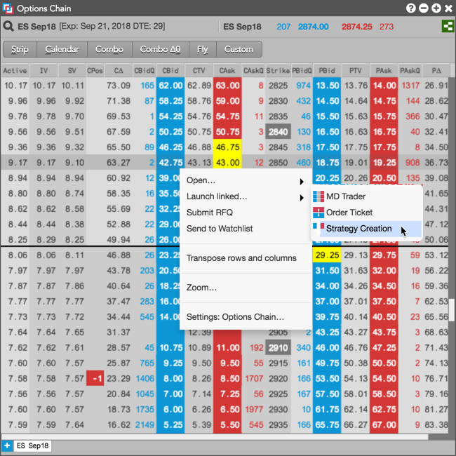
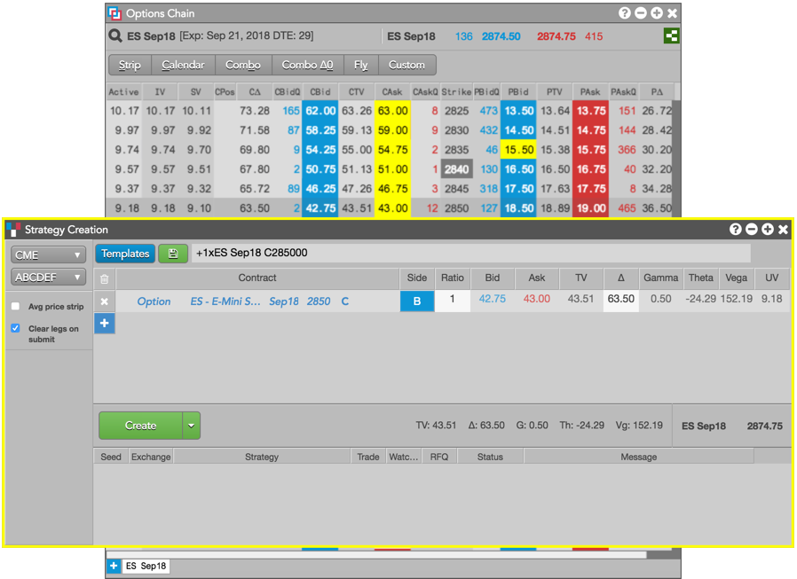

You can create a custom options strategy using the Strategy Creation widget as a:
In addition, you can configure a Block trade directly from Strategy Creation.
Using a stand-alone Strategy Creation widget
To create a strategy using a stand-alone Strategy Creation widget:
- In an opened Strategy Creation widget, select an exchange and account using the exchange and account selectors at the top left corner of the widget.
For the first leg, click Select and choose a product type
(e.g., Options), product, expiry, and select Put (P) or Call (C).
Use either the Explorer or the Instrument Picker to identify the contract. The Instrument Picker allows you to set each part of the contract leg separately by clicking a field and selecting a value.
Tip: Optionally, you can click Templates to select a structure that you can customize as an exchange-supported strategy.
Set the Side (B) and Ratio for the strategy leg.
A single click in the
Side column toggles a leg to the opposite Buy/Sell direction, and you can adjust the Ratio of each leg if needed.
- Click + to add each additional leg in the strategy as needed.
For the second leg and each subsequent leg, click Select to choose an exchange (CME), product type (Option), product, and contract.
Use either the Explorer or the Instrument Picker to identify the contract. Duplicate instruments in the same strategy are not allowed.

Set the side and ratio for the strategy leg.
A single click in the Side column toggles a leg to the opposite Buy/Sell direction, and you can adjust the Ratio of each leg if needed.
For Futures legs, set a price and delta, which represents how many futures contracts you have to buy to flatten (or cover) your position in the options leg(s). For example, if you buy a 100 calls and puts in two legs, then your delta should be between 0-100.
- Optionally, uncheck (disable) Clear legs on submit to keep the strategy legs in the strategy definition grid when the strategy is submitted.
- Click the Create button dropdown arrow and select one of the following:
- Create — Creates and submits the strategy to the exchange.
- Watch — Sends the strategy to the Watchlist widget in your workspace.
- Create & Watch Submits the strategy to the exchange and sends it to the Watchlist widget in your workspace.
Tip: You can also drag-and-drop the created strategy from the execution report panel to the Watchlist.

When you click Create or Create & Watch, the user-defined strategy is sent to the exchange. When validated, the exchange publishes the strategy as an exchange-traded instrument for the trading session.
The user-defined strategies that you create can be selected as instruments using the Search box and the Market Explorer.
- Optionally, click the Save button to save the strategy as a user-defined strategy template. The saved strategy appears in the Templates list.
Using Strategy Creation grouped with Market Grid
You can group the Strategy Creation widget with a Market Grid to view the legs of an options strategy or create your own custom options strategy.
Right-click the Strategy Creation title bar to select Create widget group... and connect the Strategy Creation widget to the Market Grid.
Select an options strategy in the Market Grid to seed and view all legs of the strategy in Strategy Creation.

Modify the price, quantity, instrument, or side of each leg as needed to create your own
strategy.
Strategy configuration in the widget group works the same as using a stand-alone Strategy Creation widget. After configuring your strategy, you can submit it to the market or add it to the Watchlist.
Using Strategy Creation linked with Market Grid
To create a strategy using Strategy Creation launched as a linked widget from Market Grid, do the
following:
Right-click a strategy in the Market Grid and select Launch linked... from the context menu.

The linked widget appears and is seeded with the selected options strategy. The border of the widget is highlighted yellow.

Modify the price, quantity, instrument, or side of each leg as needed to create your own
strategy.
Strategy configuration in a linked widget works the same as using a stand-alone Strategy Creation widget. After configuring your strategy, you can submit it to the market or add it to the Watchlist.
Using Strategy Creation grouped with Options Chain
You can group the Strategy Creation widget with an Options Chain to build your own custom strategy on a per options contract basis. As you select an options contract in the Options Chain, it is added as a strategy leg in Strategy Creation.
Right-click the Strategy Creation title bar to select Create widget group... and connect the Strategy Creation widget to the Options Chain.
In the Options Chain, press and hold the Ctrl key (control or command key for Mac OS) to enter spread building mode and click data unique to a Call or Put options contract.
Each selected options contract is added as a strategy leg in the Strategy Creation section of the
widget group.

Modify the price, quantity, instrument, or side of each leg as needed to create your own
strategy.
Strategy configuration in the widget group works the same as using a stand-alone Strategy Creation widget. After configuring your strategy, you can submit it to the market or add it to the Watchlist.
Configuring a Block trade from Strategy Creation
In the case that a strategy must be created before entering a Block, you can seed Blocktrader with the appropriate strategy with one click from Strategy Creation. To configure the Block trade, click the Blocktrader icon in the Block column in the execution report panel after creating the strategy.

When the Blocktrader widget opens, it's seeded with the selected strategy and exchange, and uses the default order quantity selected in the Blocktrader settings.

Using Strategy Creation linked with Options Chain
To create a strategy using Strategy Creation launched as a linked widget from Options Chain, do the following:
Right-click a market data cell for an options contract or underlying future and select Launch linked... from the context menu.

The linked widget appears and is seeded with the selected options or futures contract. The border of the widget is highlighted yellow.

Modify the price, quantity, instrument, or side of each leg as needed to create your own
strategy.
Strategy configuration in a linked widget works the same as using a stand-alone Strategy Creation widget. After configuring your strategy, you can submit it to the market or add it to the Watchlist.